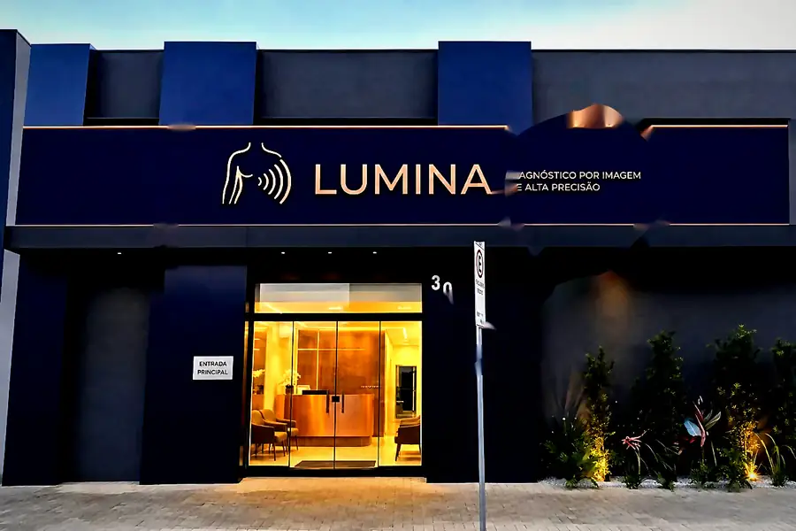
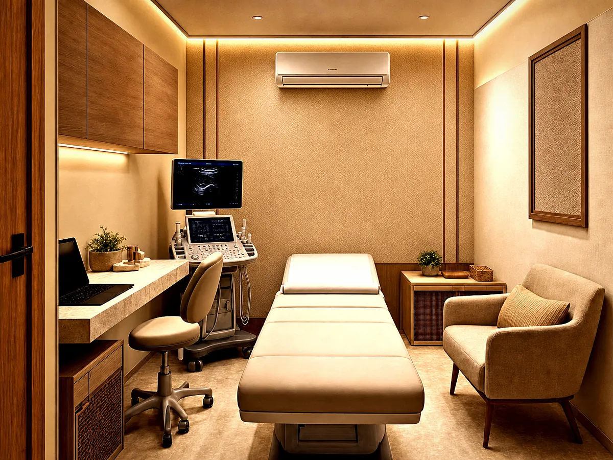
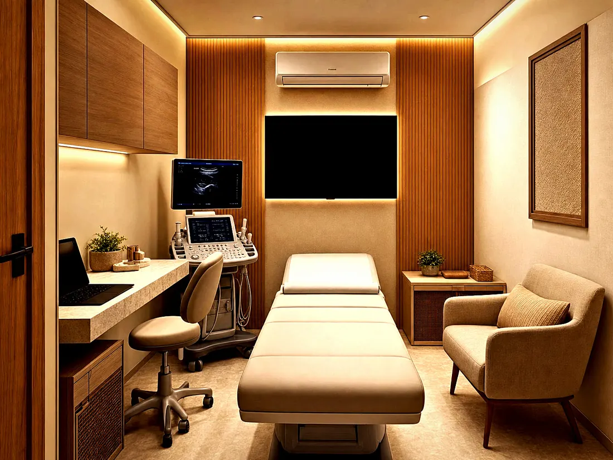

Diagnóstico por imagem de alta precisão · Jaú/SP
Ultrassonografia com laudo digital e horários que respeitam o seu tempo. Agende online ou pelo WhatsApp.
Já é paciente? Acesse seu laudo →
Simples do começo ao fim
Exames que fazemos
Bem-vindo à Lumina

Tecnologia a serviço do diagnóstico
Equipamento de ultrassonografia de alta resolução, com Doppler, elastografia e imagem panorâmica — sempre conduzido e laudado por médico especialista.
Conhecer a tecnologiaPrograma de Acompanhamento Lumina
Exames de rotina que se repetem por protocolo — com desconto de fidelidade e um lembrete no WhatsApp na data certa, para você não esquecer o seu seguimento.
Pensado para a sua rotina
Atendemos em horários ampliados — cedo, no fim da tarde e aos sábados — para você fazer seu exame antes, depois ou no intervalo do expediente.
Em breve: atendimento domiciliar · agendamento por telefone / WhatsApp
Perguntas frequentes